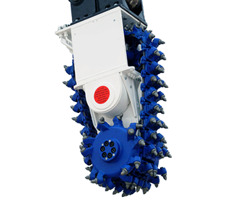
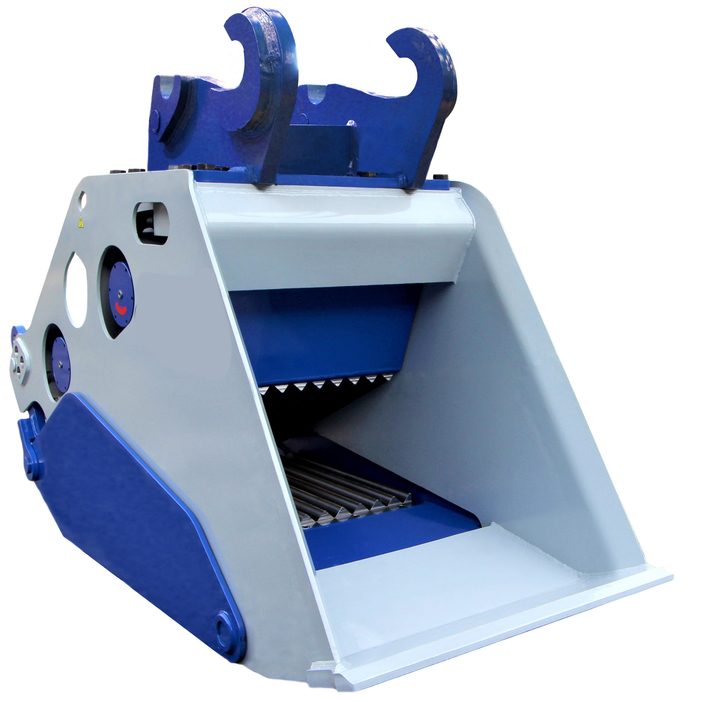
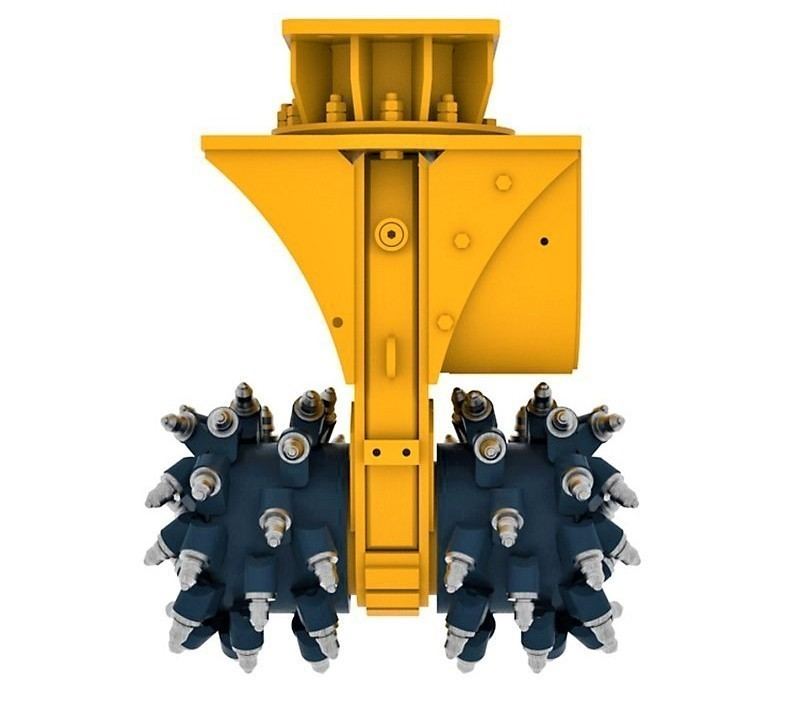
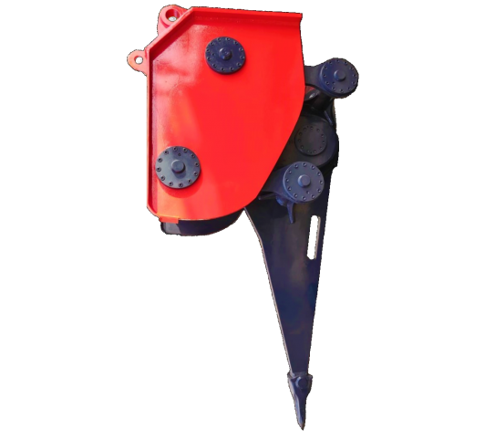

Chain Drum Cutter
Chain Drum Cutter is designed to give maximum cutting performance with minimum wear costs. High torque hydraulic motors drive extremely large super gears to turn the cutter drums. The gear wheels are so robust the drum cutters can be used in the most difficult conditions without the risk of failure.
Aplications:
Trenching / Tunnelling / Underwater works / Stripping and reclamation / Quarrying / Demolition / Wall profiling.
Click here for
Technical Specification & Drawing>
| Model | DC 10 | DC 20 | DC 30 | DC 40 | DC 50 | |
|---|---|---|---|---|---|---|
| EXCAVATOR WEIGHT | TONS | 10-17 | 18-25 | 24-33 | 34-45 | 45-60 |
| ROTATION PER MINUTE | RPM | 70 | 70 | 70 | 70 | 70 |
| OIL FLOW AT 150 BAR | L/MIN | 130-200 | 180-250 | 240-300 | 250-400 | 280-420 |
| MAXIMUM OIL FLOW | L/MIN | 220 | 260 | 300 | 420 | 450 |
| RATED POWER | KW | 60 | 100 | 110 | 140 | 150 |
| MAX UNIAXIAL COMPRESSIVE STREGTH | MPA | 50 | 80 | 80 | 100 | 100 |
| MAX CUTTING FORCE AT MAX HYD PRESSURE | N | 27,500 | 45,000 | 61,200 | 62,000 | 71,000 |
| MAX TORQUE AT MAX HYD PRESSURE | NM | 11,000 | 18W,000 | 24,300 | 25,700 | 30,000 |
| MAXIMUM OPERATING HYD PRESSURE | BAR | 380 | 380 | 380 | 380 | 380 |
| WEIGHT | KG | 1,400 | 2,500 | 3,700 | 3,700 | 3,800 |
| CHAIN DRUM CUTTER LENGTH (A) | MM | 1,900 | 1,900 | 1,900 | 2,050 | 2,050 |
| CHAIN CUTTER HEAD WIDTH (B) | MM | 500 | 600-800 | 600-800 | 800-1000 | 800-1000 |
| DRUM CUTTER DIAMETER (C) | MM | 800 | 800 | 800 | 800 | 850 |
| WIDTH OF GAIRBOX (D) | MM | 450 | 500 | 500 | 700 | 700 |
| NUMBER OF PICKS IN DRUM CUTTER | PCS | 48 | 30-46-52 | 30-46-52 | 42-48-54 | 42-48-56 |
| NUMBER OF PICKS IN CHAIN CUTTER | PCS | 53 | 53 | 53 | 62 | 62 |
Crusher Bucket
MCB Crusher Bucket is a consistent quality and high performance crusher bucket, MCB Crusher Buckets are capable of crushing & recycling a wide range of sizes and types of material's, including brick, concrete and rock.
Crusher buckets are designed to turn your machine into a real crusher.
Crusher Bucket has many areas of applications:
From building demolitions in general / to the reclamation of former industrial and urban areas to the processing of excavation materials / from the earth movement sector to road works / from quarries to mines / from environmental reclamation to applications on rocky soil.
Click here for
Technical Specification & Drawing>
| Model | MCB 18 | MCB 22 | MCB 30 | MCB 40 | MCB 50 | MCB 60 | |
|---|---|---|---|---|---|---|---|
| EXCAVATOR SIZE | TONS | 17-21 | 22-30 | 30-40 | 40-50 | 50-65 | 65-80 |
| LENGTH | MM | 2.060 | 2.477 | 2.574 | 2.854 | 3.320 | 3.445 |
| HEIGHT | MM | 1.210 | 1.310 | 1.410 | 1.460 | 1.565 | 1.907 |
| WEIGHT | KG | 2.100 | 2.600 | 3.800 | 5.400 | 6.350 | 11.000 |
| INTERNAL WIDTH | MM | 740 | 740 | 950 | 1.150 | 1.150 | 1.350 |
| EXTERNAL WIDTH | MM | 950 | 950 | 1.100 | 1.300 | 1.300 | 1.550 |
| MAX.DRAIN PRESSURE | MPA | 0.5 | 0.5 | 0.5 | 0.5 | 0.5 | 0.5 |
| OPERATING PRESSURE | MPA | 25 | 27 | 27 | 33 | 32 | 25 |
| OPERATING FLOW | L/MIN | 160 | 180 | 195 | 300 | 340 | 500 |
| LOADING CAPACITY | M3 | 0.6 | 0.8 | 1 | 1.30 | 1.5 | 2 |
| HYDRAULIC CIRCUIT | 2X effect | 2X effect | 2X effect | 2X effect | 2X effect | 2X effect | |
| JAW OPENING | MM | 400 | 420 | 430 | 465 | 500 | 500 |
| CRUSHING SIZE | MM | 20-80 | 20-90 | 20-140 | 20-150 | 20-210 | 20-220 |

Double Drum Cutter
This equipment uses world-class hydraulic technology for mining, Tunnelling, profile Correction, and channel surface grooving, asphalt Pavement milling, and rock soil mining.
Aplications:
Cutting of trenches and shafts in hard ground / Trimming of concrete and asphalt / Trimming the surface of secant bored piles / Cutting of tunnel profiles / Any kind of rock excavation / Removing stumps and roots of trees.
Click here for
Technical Specification & Drawing>
| Model | MDC 10 | MDC 15 | MDC 30 | MDC 40 | MDC 50 | |
|---|---|---|---|---|---|---|
| CSRRIER WEIGHT | TON | 8-15 | 16-22 | 23-35 | 35-45 | 45-60 |
| PRODUCT WEIGHT | KG | 420 | 1,100 | 1,850 | 2,000 | 2,550 |
| HYDRAULIC OIL FLOW | L/MIN | 75-130 | 110-180 | 190-340 | 200-350 | 280-420 |
| ROTATION SPEED | RPM | 80-140 | 60-110 | 65-90 | 50-90 | 50-80 |
| MAX OPERATING PRESSURE | BAR | 350 | 350 | 350 | 350 | 350 |
| MAX CUTTING FORCE | N | 22,300 | 37,200 | 58,500 | 70,100 | 82,400 |
| MAX TORQUE | NM | 5,300 | 10,500 | 20,000 | 24,500 | 28,500 |
| MAX ROCK HARDNESS | MPA | 45 | 55 | 75 | 80 | 100 |
| WIDTH OF GRINDER HEAD | A | 670 | 740 | 880 | 940 | 960 |
| LENGTH OF DRUM CUTTER | B | 740 | 990 | 1,300 | 1,300 | 1,350 |
| DIAMETER OF GRINDER HEAD | C | 380 | 570 | 680 | 680 | 720 |
| NUMBER OF PICKS | 62 | 48 | 48 | 55 | 55 | |
Vibro Ripper
Vibro Ripper is a new generation attachment developed and manufactured to effectively excavate, crush and destroy a Different kind of Rocks such as rocks weathered by wind and water, hard soil, skate, quartz, building concrete, and limestone, etc.
Vibro Ripper is widely used in:
Construction areas / Mining / Building Demolition / civil engineering / Underwater engineering / Tunnel engineering / and other special operating environments.
Click here for
Technical Specification & Drawing>
| Model | MVR 20 | MVR 30 | MVR 40 | MVR 50 | MVR 60 | MVR 80 | MVR 90 | |
|---|---|---|---|---|---|---|---|---|
| EXCAVATOR WEIGHT | TONS | 12-20 | 20-35 | 35-45 | 45-60 | 60-75 | 75-85 | 85-95 |
| OPERATION WEIGHT | KG | 2400 | 3600 | 4300 | 6100 | 7000 | 8200 | 9400 |
| HEIGHT | MM | 1780 | 2435 | 2478 | 2647 | 2937 | 3010 | 3127 |
| WIDTH | MM | 734 | 802 | 804 | 823 | 847 | 973 | 1073 |
| FREQUENCY | 1/MIN | 1500 | 1400 | 1300 | 1200 | 1100 | 1000 | 1000 |
| HYDRAULIC WORKING PRESSURE | MPA | 17-21 | 21-23 | 22-24 | 22-24 | 26-28 | 26-28 | 30-32 |
| HYDRAULIC OIL FALLOW | L/MIN | 120 | 160 | 180 | 200 | 250 | 280 | 360 |
| AIR PRESSURE | BAR | 3 | 3 | 4 | 4 | 4 | 3 | 3 |
| MAXIMUM PRESSURE | MPA | 0.4 | 0.4 | 0,5 | 0.4 | 0.4 | 0.4 | 0.4 |
| ACCUMULATOR PRESSURE | MPA | 0.5 | 0.5 | 0.5 | 0.4 | 0.1 | 0.6 | 0.6 |